COMP 1601 Winter 2020
Tut09 Android Activity Lifecyle
© L.D. Nel 2020
Revisions -none yet
Description:
The purpose of this exercise is to learn about the activity lifecycle of Android activities. This knowledge is essential to proceed with building applications that involve more than one activity, or screen, or applications that allow the user to rotate the screen.
You need to demonstrate your exercise to the TA or Prof. before you leave the class to get credit for it. Marks: 2 or completion, 1 for partial progress, 0 for no show or no progress. (A mark of 1 can be upgraded to 2 is show us your completed work within one week of this exercise.)
Instructions:
Background:
Acitivties in android go through a lifecycle as a result of having lifecyle methods invoked on them by the android operating system. Methods such as onCreate(), onPause(), onResume() etc. The lifecycle of Activity instances is described here and a picture of the life cycle is as follows:
In addition a Bundle savedInstanceState often accompanies these methods which allows the activities to save their state when being paused, or stopped, and recover their state when being resumed. Bundles are used to pass data to a new activity. We will explore using these in the next tutorial. Think of Bundles as a general purpose data structure that can be used to pass whatever data you want between activities.
Demo Code
Open and run the project in the demo_code folder. It is essentially the answer code from the previous tutorial which is the Quiz application but now has Logcat output capability built in. (Feel free to use your own answer code from the previous tutorial if you prefer.) Verify that it runs:
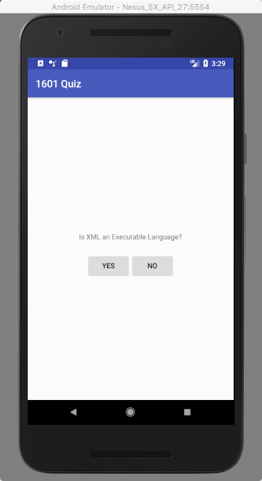
Problem 1) Logcat setup
Put a Logcat output in the onCreate() method that verifies that the method has run.
Log.i(TAG, "onCreate()");
Set up a Logcat filter called LifeCycle Methods to show only our MainActivity logs and only messages that start with the substring "on" like in "onCreate()". If necessary review using regular expressions (from the last tutorial) here: regex tutorial or the handy cheat sheet. (Hint: use the ^ anchor tag in the regular expression to specify the start of the message string.) Here is what worked for me:
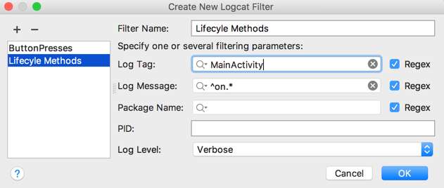
When you've completed this you should be able to just see the "onCreate()" on the logcat when you start the application:
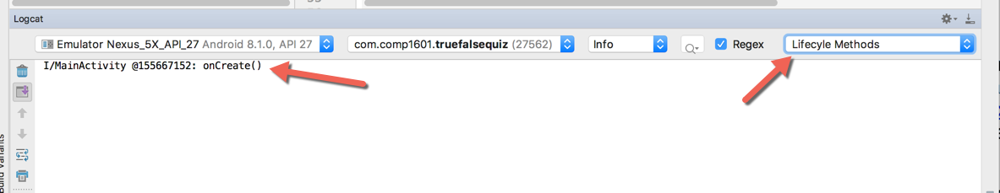
Problem 2) All the Lifecycle Methods
Visit the android developer documentation site that describes the Activity and activity lifecyle and observe the following methods that make up the lifecyle transistions:
Study the method signatures and java details of these methods by studying the documentation links. For example for onCreate():
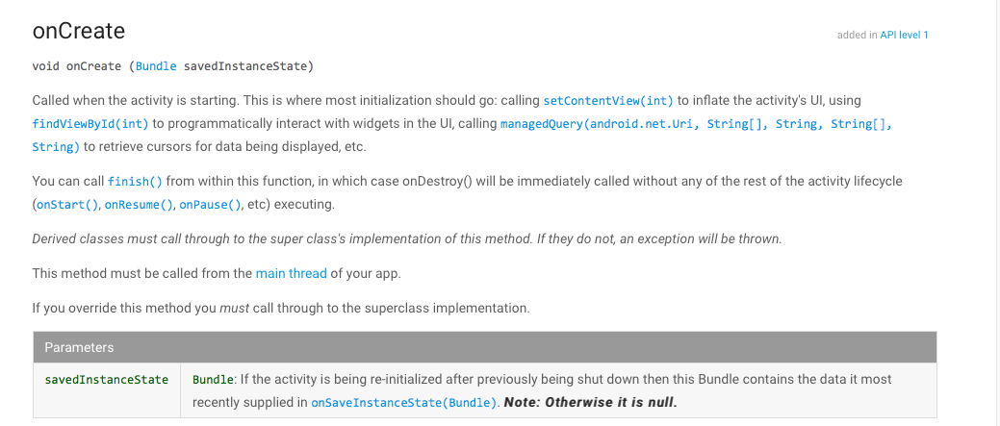
Now look at the implementation of our onCreate() method in MainActivity and observe the following structure:
@Override
protected void onCreate(Bundle savedInstanceState) {
super.onCreate(savedInstanceState);
//...
Log.i(TAG, "onCreate()"); //... }
Notice the following
The @Override annotation is a "smart" comment that tells the compiler we are overriding a superlcass method (an inherited method). The code would work without the annotation but with the annotation there the compiler checks that the superclass actually has such a method and would warn us if there was not. This can catch a lot of bugs where you intend to override a method but spell the name of it wrong or have different parameters and you are in effect creating a brand new (non-overriding) method. So always use this annotation in your code if you are intending to override an inherited method. In java programing they often talk about overriding a method and overloading a method. What is the difference?
The super.onCreate() gives the superclass an chance to run its version of the method first (that's why its important that this be the first statement.) Also notice the Bundle argument passed into onCreate() is used in the super.onCreate() call. It is very important the superclass method has a opportunity to see this argument as well. In java programming they talk about method parameters and method arguments. Again, what is the difference?
Finally we have our Logcat statement.
For this problem implement in MainActivity a version of all the other lifecyle methods. These implementations should do nothing more than the steps above. We are just catching them and outputing that they ran. What they actually do is handled by the super.method call. Here is what the onStart() implementation might look like: (Notice they don't all have the same parameters.)
@Override
protected void onStart(){
super.onStart();
Log.i(TAG, "onStart()") ;
}
Also if the method takes a parameter then make the type of the parameter part of the logcat output message. For example onCreate(Bundle savedInstanceState) takes a Bundle parameter. So change its log statement to Log.i(TAG, "onStart(Bundle)". Do the same for all the other methods as well.
When you are done. Clear the logcat and restart your app and with the appropriate filtering observe the lifecycle transitions that the app goes through:
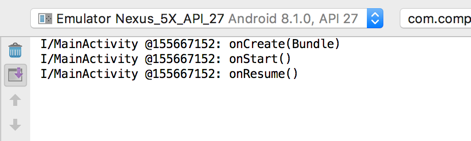
Study the documention on the Android activity lifecyles and explain why those are the lifecycle method calls that you would expect to see.
In the next few problems we will ask you do perform inputs and we want you to observe what affect that has on the lifecyle methods that get called. Then be prepared to explain why those make sense. Also pay attention to whether the process ID in the logcat ever changes. If it does it means you are dealing with a different instance of Activity.
Problem 3)
Clear the logcat and restart the application. Now hit the back button on the device. Then relaunch the app from the home screen. Explain the logcat output that results.
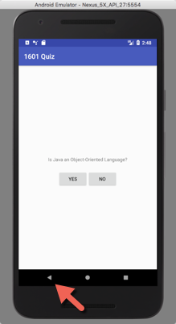 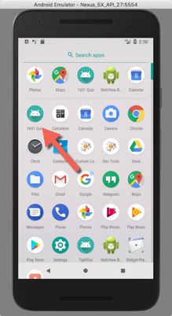 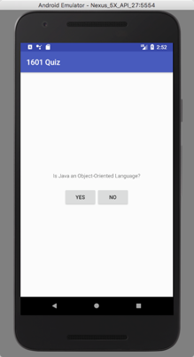
Problem 4)
Again clear the logcat, re-run the app from Android Studio. This time press the recents button to reveal the recent apps tabs and select the 1601Quiz app again. Explain the logcat output that results. There is something significantly differerent in this scenario compared to problem 3 above. What it that difference?
[Is it different if you hit the home button, swipe up to reveal the installed apps and relaunch the 1601Quiz app. Does that resemble problem 4 or problem 3?]
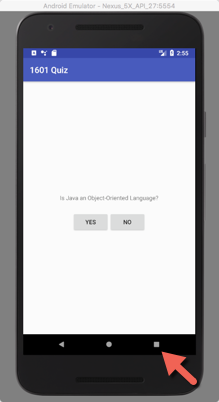 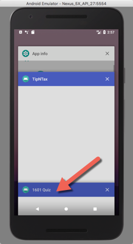
Problem 5)
Again clear the logcat, re-run the app from Android Studio. This time answer a couple of quiz questions then rotate the device screen from portrait to landscape and then back to portrait. What do you observe about the app behaviour. Explain the logcat output that results.
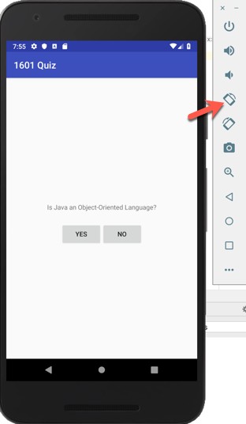
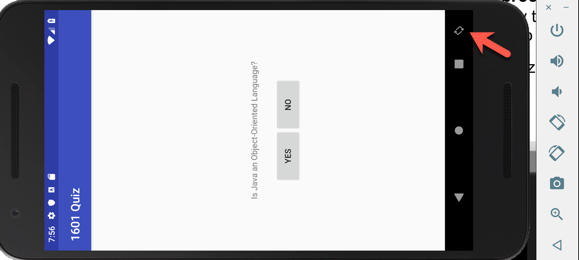 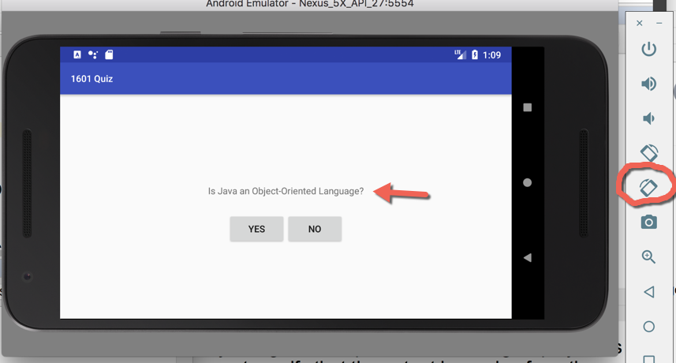
This last example should reveal a significant problem. How many actual activities were involved? The behaviour of the app in this situation is not desireable (the questions reset to the start.) What explanation does the logcat provide about why this is happening. In the next tutorial we will build a solution that accomodates rotations.
When you have completed these problems demonstrate your code to the TA or Prof. to get credit for the tutorial.